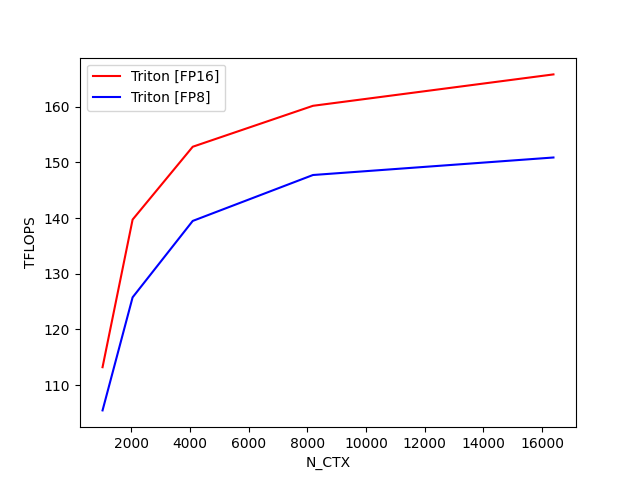
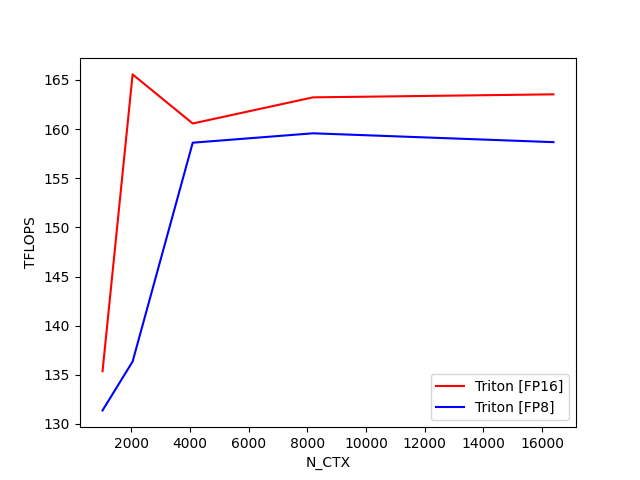
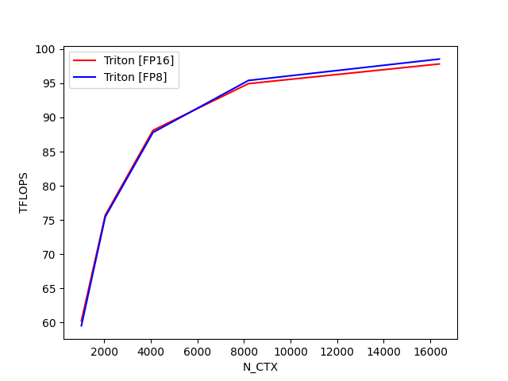

Note
Go to the end to download the full example code.
Fused Attention¶
This is a Triton implementation of the Flash Attention v2 algorithm from Tri Dao (https://tridao.me/publications/flash2/flash2.pdf) Credits: OpenAI kernel team
Extra Credits: - Original flash attention paper (https://arxiv.org/abs/2205.14135) - Rabe and Staats (https://arxiv.org/pdf/2112.05682v2.pdf)
- 
- 
- 
fused-attention-batch4-head32-d64-fwd-causal=True:
N_CTX Triton [FP16] Triton [FP8]
0 1024.0 113.279502 92.957577
1 2048.0 140.504657 113.988273
2 4096.0 154.083021 126.372130
3 8192.0 165.532282 131.646128
4 16384.0 171.212002 135.234808
fused-attention-batch4-head32-d64-fwd-causal=False:
N_CTX Triton [FP16] Triton [FP8]
0 1024.0 156.807352 128.432117
1 2048.0 166.560471 147.877079
2 4096.0 170.259566 149.325452
3 8192.0 172.178471 147.564631
4 16384.0 173.593646 148.499171
fused-attention-batch4-head32-d64-bwd-causal=True:
N_CTX Triton [FP16] Triton [FP8]
0 1024.0 73.810641 72.853114
1 2048.0 98.404370 98.272635
2 4096.0 116.271257 116.298965
3 8192.0 128.152887 128.855709
4 16384.0 134.569287 135.472541
import pytest
import torch
import triton
import triton.language as tl
def is_hip():
return triton.runtime.driver.active.get_current_target().backend == "hip"
@triton.jit
def _attn_fwd_inner(acc, l_i, m_i, q, #
K_block_ptr, V_block_ptr, #
start_m, qk_scale, #
BLOCK_M: tl.constexpr, HEAD_DIM: tl.constexpr, BLOCK_N: tl.constexpr, #
STAGE: tl.constexpr, offs_m: tl.constexpr, offs_n: tl.constexpr, #
N_CTX: tl.constexpr, fp8_v: tl.constexpr):
# range of values handled by this stage
if STAGE == 1:
lo, hi = 0, start_m * BLOCK_M
elif STAGE == 2:
lo, hi = start_m * BLOCK_M, (start_m + 1) * BLOCK_M
lo = tl.multiple_of(lo, BLOCK_M)
# causal = False
else:
lo, hi = 0, N_CTX
K_block_ptr = tl.advance(K_block_ptr, (0, lo))
V_block_ptr = tl.advance(V_block_ptr, (lo, 0))
# loop over k, v and update accumulator
for start_n in range(lo, hi, BLOCK_N):
start_n = tl.multiple_of(start_n, BLOCK_N)
# -- compute qk ----
k = tl.load(K_block_ptr)
qk = tl.dot(q, k)
if STAGE == 2:
mask = offs_m[:, None] >= (start_n + offs_n[None, :])
qk = qk * qk_scale + tl.where(mask, 0, -1.0e6)
m_ij = tl.maximum(m_i, tl.max(qk, 1))
qk -= m_ij[:, None]
else:
m_ij = tl.maximum(m_i, tl.max(qk, 1) * qk_scale)
qk = qk * qk_scale - m_ij[:, None]
p = tl.math.exp2(qk)
l_ij = tl.sum(p, 1)
# -- update m_i and l_i
alpha = tl.math.exp2(m_i - m_ij)
l_i = l_i * alpha + l_ij
# -- update output accumulator --
acc = acc * alpha[:, None]
# update acc
v = tl.load(V_block_ptr)
if fp8_v:
p = p.to(tl.float8e5)
else:
p = p.to(tl.float16)
acc = tl.dot(p, v, acc)
# update m_i and l_i
m_i = m_ij
V_block_ptr = tl.advance(V_block_ptr, (BLOCK_N, 0))
K_block_ptr = tl.advance(K_block_ptr, (0, BLOCK_N))
return acc, l_i, m_i
# We don't run auto-tuning every time to keep the tutorial fast. Keeping
# the code below and commenting out the equivalent parameters is convenient for
# re-tuning.
configs = [
triton.Config({'BLOCK_M': BM, 'BLOCK_N': BN}, num_stages=s, num_warps=w) \
for BM in [64, 128]\
for BN in [32, 64]\
for s in ([1] if is_hip() else [3, 4, 7])\
for w in [4, 8]\
]
def keep(conf):
BLOCK_M = conf.kwargs["BLOCK_M"]
BLOCK_N = conf.kwargs["BLOCK_N"]
if BLOCK_M * BLOCK_N < 128 * 128 and conf.num_warps == 8:
return False
return True
@triton.autotune(list(filter(keep, configs)), key=["N_CTX"])
@triton.jit
def _attn_fwd(Q, K, V, sm_scale, M, Out, #
stride_qz, stride_qh, stride_qm, stride_qk, #
stride_kz, stride_kh, stride_kn, stride_kk, #
stride_vz, stride_vh, stride_vk, stride_vn, #
stride_oz, stride_oh, stride_om, stride_on, #
Z, H, N_CTX, #
BLOCK_M: tl.constexpr, #
BLOCK_N: tl.constexpr, #
HEAD_DIM: tl.constexpr, #
STAGE: tl.constexpr #
):
tl.static_assert(BLOCK_N <= HEAD_DIM)
start_m = tl.program_id(0)
off_hz = tl.program_id(1)
off_z = off_hz // H
off_h = off_hz % H
qvk_offset = off_z.to(tl.int64) * stride_qz + off_h.to(tl.int64) * stride_qh
# block pointers
Q_block_ptr = tl.make_block_ptr(
base=Q + qvk_offset,
shape=(N_CTX, HEAD_DIM),
strides=(stride_qm, stride_qk),
offsets=(start_m * BLOCK_M, 0),
block_shape=(BLOCK_M, HEAD_DIM),
order=(1, 0),
)
v_order: tl.constexpr = (0, 1) if V.dtype.element_ty == tl.float8e5 else (1, 0)
V_block_ptr = tl.make_block_ptr(
base=V + qvk_offset,
shape=(N_CTX, HEAD_DIM),
strides=(stride_vk, stride_vn),
offsets=(0, 0),
block_shape=(BLOCK_N, HEAD_DIM),
order=v_order,
)
K_block_ptr = tl.make_block_ptr(
base=K + qvk_offset,
shape=(HEAD_DIM, N_CTX),
strides=(stride_kk, stride_kn),
offsets=(0, 0),
block_shape=(HEAD_DIM, BLOCK_N),
order=(0, 1),
)
O_block_ptr = tl.make_block_ptr(
base=Out + qvk_offset,
shape=(N_CTX, HEAD_DIM),
strides=(stride_om, stride_on),
offsets=(start_m * BLOCK_M, 0),
block_shape=(BLOCK_M, HEAD_DIM),
order=(1, 0),
)
# initialize offsets
offs_m = start_m * BLOCK_M + tl.arange(0, BLOCK_M)
offs_n = tl.arange(0, BLOCK_N)
# initialize pointer to m and l
m_i = tl.zeros([BLOCK_M], dtype=tl.float32) - float("inf")
l_i = tl.zeros([BLOCK_M], dtype=tl.float32) + 1.0
acc = tl.zeros([BLOCK_M, HEAD_DIM], dtype=tl.float32)
# load scales
qk_scale = sm_scale
qk_scale *= 1.44269504 # 1/log(2)
# load q: it will stay in SRAM throughout
q = tl.load(Q_block_ptr)
# stage 1: off-band
# For causal = True, STAGE = 3 and _attn_fwd_inner gets 1 as its STAGE
# For causal = False, STAGE = 1, and _attn_fwd_inner gets 3 as its STAGE
if STAGE & 1:
acc, l_i, m_i = _attn_fwd_inner(acc, l_i, m_i, q, K_block_ptr, V_block_ptr, #
start_m, qk_scale, #
BLOCK_M, HEAD_DIM, BLOCK_N, #
4 - STAGE, offs_m, offs_n, N_CTX, V.dtype.element_ty == tl.float8e5 #
)
# stage 2: on-band
if STAGE & 2:
# barrier makes it easier for compielr to schedule the
# two loops independently
acc, l_i, m_i = _attn_fwd_inner(acc, l_i, m_i, q, K_block_ptr, V_block_ptr, #
start_m, qk_scale, #
BLOCK_M, HEAD_DIM, BLOCK_N, #
2, offs_m, offs_n, N_CTX, V.dtype.element_ty == tl.float8e5 #
)
# epilogue
m_i += tl.math.log2(l_i)
acc = acc / l_i[:, None]
m_ptrs = M + off_hz * N_CTX + offs_m
tl.store(m_ptrs, m_i)
tl.store(O_block_ptr, acc.to(Out.type.element_ty))
@triton.jit
def _attn_bwd_preprocess(O, DO, #
Delta, #
Z, H, N_CTX, #
BLOCK_M: tl.constexpr, HEAD_DIM: tl.constexpr #
):
off_m = tl.program_id(0) * BLOCK_M + tl.arange(0, BLOCK_M)
off_hz = tl.program_id(1)
off_n = tl.arange(0, HEAD_DIM)
# load
o = tl.load(O + off_hz * HEAD_DIM * N_CTX + off_m[:, None] * HEAD_DIM + off_n[None, :])
do = tl.load(DO + off_hz * HEAD_DIM * N_CTX + off_m[:, None] * HEAD_DIM + off_n[None, :]).to(tl.float32)
delta = tl.sum(o * do, axis=1)
# write-back
tl.store(Delta + off_hz * N_CTX + off_m, delta)
# The main inner-loop logic for computing dK and dV.
@triton.jit
def _attn_bwd_dkdv(dk, dv, #
Q, k, v, sm_scale, #
DO, #
M, D, #
# shared by Q/K/V/DO.
stride_tok, stride_d, #
H, N_CTX, BLOCK_M1: tl.constexpr, #
BLOCK_N1: tl.constexpr, #
HEAD_DIM: tl.constexpr, #
# Filled in by the wrapper.
start_n, start_m, num_steps, #
MASK: tl.constexpr):
offs_m = start_m + tl.arange(0, BLOCK_M1)
offs_n = start_n + tl.arange(0, BLOCK_N1)
offs_k = tl.arange(0, HEAD_DIM)
qT_ptrs = Q + offs_m[None, :] * stride_tok + offs_k[:, None] * stride_d
do_ptrs = DO + offs_m[:, None] * stride_tok + offs_k[None, :] * stride_d
# BLOCK_N1 must be a multiple of BLOCK_M1, otherwise the code wouldn't work.
tl.static_assert(BLOCK_N1 % BLOCK_M1 == 0)
curr_m = start_m
step_m = BLOCK_M1
for blk_idx in range(num_steps):
qT = tl.load(qT_ptrs)
# Load m before computing qk to reduce pipeline stall.
offs_m = curr_m + tl.arange(0, BLOCK_M1)
m = tl.load(M + offs_m)
qkT = tl.dot(k, qT)
pT = tl.math.exp2(qkT - m[None, :])
# Autoregressive masking.
if MASK:
mask = (offs_m[None, :] >= offs_n[:, None])
pT = tl.where(mask, pT, 0.0)
do = tl.load(do_ptrs)
# Compute dV.
ppT = pT
ppT = ppT.to(tl.float16)
dv += tl.dot(ppT, do)
# D (= delta) is pre-divided by ds_scale.
Di = tl.load(D + offs_m)
# Compute dP and dS.
dpT = tl.dot(v, tl.trans(do)).to(tl.float32)
dsT = pT * (dpT - Di[None, :])
dsT = dsT.to(tl.float16)
dk += tl.dot(dsT, tl.trans(qT))
# Increment pointers.
curr_m += step_m
qT_ptrs += step_m * stride_tok
do_ptrs += step_m * stride_tok
return dk, dv
# the main inner-loop logic for computing dQ
@triton.jit
def _attn_bwd_dq(dq, q, K, V, #
do, m, D,
# shared by Q/K/V/DO.
stride_tok, stride_d, #
H, N_CTX, #
BLOCK_M2: tl.constexpr, #
BLOCK_N2: tl.constexpr, #
HEAD_DIM: tl.constexpr,
# Filled in by the wrapper.
start_m, start_n, num_steps, #
MASK: tl.constexpr):
offs_m = start_m + tl.arange(0, BLOCK_M2)
offs_n = start_n + tl.arange(0, BLOCK_N2)
offs_k = tl.arange(0, HEAD_DIM)
kT_ptrs = K + offs_n[None, :] * stride_tok + offs_k[:, None] * stride_d
vT_ptrs = V + offs_n[None, :] * stride_tok + offs_k[:, None] * stride_d
# D (= delta) is pre-divided by ds_scale.
Di = tl.load(D + offs_m)
# BLOCK_M2 must be a multiple of BLOCK_N2, otherwise the code wouldn't work.
tl.static_assert(BLOCK_M2 % BLOCK_N2 == 0)
curr_n = start_n
step_n = BLOCK_N2
for blk_idx in range(num_steps):
kT = tl.load(kT_ptrs)
vT = tl.load(vT_ptrs)
qk = tl.dot(q, kT)
p = tl.math.exp2(qk - m)
# Autoregressive masking.
if MASK:
offs_n = curr_n + tl.arange(0, BLOCK_N2)
mask = (offs_m[:, None] >= offs_n[None, :])
p = tl.where(mask, p, 0.0)
# Compute dP and dS.
dp = tl.dot(do, vT).to(tl.float32)
ds = p * (dp - Di[:, None])
ds = ds.to(tl.float16)
# Compute dQ.
# NOTE: We need to de-scale dq in the end, because kT was pre-scaled.
dq += tl.dot(ds, tl.trans(kT))
# Increment pointers.
curr_n += step_n
kT_ptrs += step_n * stride_tok
vT_ptrs += step_n * stride_tok
return dq
@triton.jit
def _attn_bwd(Q, K, V, sm_scale, #
DO, #
DQ, DK, DV, #
M, D,
# shared by Q/K/V/DO.
stride_z, stride_h, stride_tok, stride_d, #
H, N_CTX, #
BLOCK_M1: tl.constexpr, #
BLOCK_N1: tl.constexpr, #
BLOCK_M2: tl.constexpr, #
BLOCK_N2: tl.constexpr, #
BLK_SLICE_FACTOR: tl.constexpr, #
HEAD_DIM: tl.constexpr):
LN2: tl.constexpr = 0.6931471824645996 # = ln(2)
bhid = tl.program_id(2)
off_chz = (bhid * N_CTX).to(tl.int64)
adj = (stride_h * (bhid % H) + stride_z * (bhid // H)).to(tl.int64)
pid = tl.program_id(0)
# offset pointers for batch/head
Q += adj
K += adj
V += adj
DO += adj
DQ += adj
DK += adj
DV += adj
M += off_chz
D += off_chz
# load scales
offs_k = tl.arange(0, HEAD_DIM)
start_n = pid * BLOCK_N1
start_m = start_n
MASK_BLOCK_M1: tl.constexpr = BLOCK_M1 // BLK_SLICE_FACTOR
offs_n = start_n + tl.arange(0, BLOCK_N1)
dv = tl.zeros([BLOCK_N1, HEAD_DIM], dtype=tl.float32)
dk = tl.zeros([BLOCK_N1, HEAD_DIM], dtype=tl.float32)
# load K and V: they stay in SRAM throughout the inner loop.
k = tl.load(K + offs_n[:, None] * stride_tok + offs_k[None, :] * stride_d)
v = tl.load(V + offs_n[:, None] * stride_tok + offs_k[None, :] * stride_d)
num_steps = BLOCK_N1 // MASK_BLOCK_M1
dk, dv = _attn_bwd_dkdv(dk, dv, #
Q, k, v, sm_scale, #
DO, #
M, D, #
stride_tok, stride_d, #
H, N_CTX, #
MASK_BLOCK_M1, BLOCK_N1, HEAD_DIM, #
start_n, start_m, num_steps, #
MASK=True #
)
start_m += num_steps * MASK_BLOCK_M1
num_steps = (N_CTX - start_m) // BLOCK_M1
# Compute dK and dV for non-masked blocks.
dk, dv = _attn_bwd_dkdv( #
dk, dv, #
Q, k, v, sm_scale, #
DO, #
M, D, #
stride_tok, stride_d, #
H, N_CTX, #
BLOCK_M1, BLOCK_N1, HEAD_DIM, #
start_n, start_m, num_steps, #
MASK=False #
)
dv_ptrs = DV + offs_n[:, None] * stride_tok + offs_k[None, :] * stride_d
tl.store(dv_ptrs, dv)
# Write back dK.
dk *= sm_scale
dk_ptrs = DK + offs_n[:, None] * stride_tok + offs_k[None, :] * stride_d
tl.store(dk_ptrs, dk)
# THIS BLOCK DOES DQ:
start_m = pid * BLOCK_M2
end_n = start_m + BLOCK_M2
MASK_BLOCK_N2: tl.constexpr = BLOCK_N2 // BLK_SLICE_FACTOR
offs_m = start_m + tl.arange(0, BLOCK_M2)
q = tl.load(Q + offs_m[:, None] * stride_tok + offs_k[None, :] * stride_d)
dq = tl.zeros([BLOCK_M2, HEAD_DIM], dtype=tl.float32)
do = tl.load(DO + offs_m[:, None] * stride_tok + offs_k[None, :] * stride_d)
m = tl.load(M + offs_m)
m = m[:, None]
# Compute dQ for masked (diagonal) blocks.
# NOTE: This code scans each row of QK^T backward (from right to left,
# but inside each call to _attn_bwd_dq, from left to right), but that's
# not due to anything important. I just wanted to reuse the loop
# structure for dK & dV above as much as possible.
num_steps = BLOCK_M2 // MASK_BLOCK_N2
dq = _attn_bwd_dq(dq, q, K, V, #
do, m, D, #
stride_tok, stride_d, #
H, N_CTX, #
BLOCK_M2, MASK_BLOCK_N2, HEAD_DIM, #
start_m, end_n - num_steps * MASK_BLOCK_N2, num_steps, #
MASK=True #
)
end_n -= num_steps * MASK_BLOCK_N2
# stage 2
num_steps = end_n // BLOCK_N2
dq = _attn_bwd_dq(dq, q, K, V, #
do, m, D, #
stride_tok, stride_d, #
H, N_CTX, #
BLOCK_M2, BLOCK_N2, HEAD_DIM, #
start_m, end_n - num_steps * BLOCK_N2, num_steps, #
MASK=False #
)
# Write back dQ.
dq_ptrs = DQ + offs_m[:, None] * stride_tok + offs_k[None, :] * stride_d
dq *= LN2
tl.store(dq_ptrs, dq)
class _attention(torch.autograd.Function):
@staticmethod
def forward(ctx, q, k, v, causal, sm_scale):
# shape constraints
HEAD_DIM_Q, HEAD_DIM_K = q.shape[-1], k.shape[-1]
# when v is in float8_e5m2 it is transposed.
HEAD_DIM_V = v.shape[-2] if v.dtype == torch.float8_e5m2 else v.shape[-1]
assert HEAD_DIM_Q == HEAD_DIM_K and HEAD_DIM_K == HEAD_DIM_V
assert HEAD_DIM_K in {16, 32, 64, 128, 256}
o = torch.empty_like(q)
stage = 3 if causal else 1
extra_kern_args = {}
# Tuning for AMD target
if is_hip():
waves_per_eu = 3 if HEAD_DIM_K <= 64 else 2
extra_kern_args = {"waves_per_eu": waves_per_eu, "allow_flush_denorm": True}
grid = lambda args: (triton.cdiv(q.shape[2], args["BLOCK_M"]), q.shape[0] * q.shape[1], 1)
M = torch.empty((q.shape[0], q.shape[1], q.shape[2]), device=q.device, dtype=torch.float32)
_attn_fwd[grid](
q, k, v, sm_scale, M, o, #
q.stride(0), q.stride(1), q.stride(2), q.stride(3), #
k.stride(0), k.stride(1), k.stride(2), k.stride(3), #
v.stride(0), v.stride(1), v.stride(2), v.stride(3), #
o.stride(0), o.stride(1), o.stride(2), o.stride(3), #
q.shape[0], q.shape[1], #
N_CTX=q.shape[2], #
HEAD_DIM=HEAD_DIM_K, #
STAGE=stage, #
**extra_kern_args)
ctx.save_for_backward(q, k, v, o, M)
ctx.grid = grid
ctx.sm_scale = sm_scale
ctx.HEAD_DIM = HEAD_DIM_K
ctx.causal = causal
return o
@staticmethod
def backward(ctx, do):
q, k, v, o, M = ctx.saved_tensors
assert do.is_contiguous()
assert q.stride() == k.stride() == v.stride() == o.stride() == do.stride()
dq = torch.empty_like(q)
dk = torch.empty_like(k)
dv = torch.empty_like(v)
BATCH, N_HEAD, N_CTX = q.shape[:3]
PRE_BLOCK = 128
NUM_WARPS, NUM_STAGES = 4, 5
BLOCK_M1, BLOCK_N1, BLOCK_M2, BLOCK_N2 = 32, 128, 128, 32
BLK_SLICE_FACTOR = 2
RCP_LN2 = 1.4426950408889634 # = 1.0 / ln(2)
arg_k = k
arg_k = arg_k * (ctx.sm_scale * RCP_LN2)
PRE_BLOCK = 128
assert N_CTX % PRE_BLOCK == 0
pre_grid = (N_CTX // PRE_BLOCK, BATCH * N_HEAD)
delta = torch.empty_like(M)
_attn_bwd_preprocess[pre_grid](
o, do, #
delta, #
BATCH, N_HEAD, N_CTX, #
BLOCK_M=PRE_BLOCK, HEAD_DIM=ctx.HEAD_DIM #
)
grid = (N_CTX // BLOCK_N1, 1, BATCH * N_HEAD)
_attn_bwd[grid](
q, arg_k, v, ctx.sm_scale, do, dq, dk, dv, #
M, delta, #
q.stride(0), q.stride(1), q.stride(2), q.stride(3), #
N_HEAD, N_CTX, #
BLOCK_M1=BLOCK_M1, BLOCK_N1=BLOCK_N1, #
BLOCK_M2=BLOCK_M2, BLOCK_N2=BLOCK_N2, #
BLK_SLICE_FACTOR=BLK_SLICE_FACTOR, #
HEAD_DIM=ctx.HEAD_DIM, #
num_warps=NUM_WARPS, #
num_stages=NUM_STAGES #
)
return dq, dk, dv, None, None
attention = _attention.apply
@pytest.mark.parametrize("Z, H, N_CTX, HEAD_DIM", [(1, 2, 1024, 64)])
@pytest.mark.parametrize("causal", [True])
def test_op(Z, H, N_CTX, HEAD_DIM, causal, dtype=torch.float16):
torch.manual_seed(20)
q = (torch.empty((Z, H, N_CTX, HEAD_DIM), dtype=dtype, device="cuda").normal_(mean=0.0, std=0.5).requires_grad_())
k = (torch.empty((Z, H, N_CTX, HEAD_DIM), dtype=dtype, device="cuda").normal_(mean=0.0, std=0.5).requires_grad_())
v = (torch.empty((Z, H, N_CTX, HEAD_DIM), dtype=dtype, device="cuda").normal_(mean=0.0, std=0.5).requires_grad_())
sm_scale = 0.5
dout = torch.randn_like(q)
# reference implementation
M = torch.tril(torch.ones((N_CTX, N_CTX), device="cuda"))
p = torch.matmul(q, k.transpose(2, 3)) * sm_scale
if causal:
p[:, :, M == 0] = float("-inf")
p = torch.softmax(p.float(), dim=-1).half()
# p = torch.exp(p)
ref_out = torch.matmul(p, v)
ref_out.backward(dout)
ref_dv, v.grad = v.grad.clone(), None
ref_dk, k.grad = k.grad.clone(), None
ref_dq, q.grad = q.grad.clone(), None
# triton implementation
tri_out = attention(q, k, v, causal, sm_scale).half()
tri_out.backward(dout)
tri_dv, v.grad = v.grad.clone(), None
tri_dk, k.grad = k.grad.clone(), None
tri_dq, q.grad = q.grad.clone(), None
# compare
assert torch.allclose(ref_out, tri_out, atol=1e-2, rtol=0)
rtol = 0.0
# Relative tolerance workaround for known hardware limitation of MI200 GPU.
# For details see https://pytorch.org/docs/stable/notes/numerical_accuracy.html#reduced-precision-fp16-and-bf16-gemms-and-convolutions-on-amd-instinct-mi200-devices
if torch.version.hip is not None and triton.runtime.driver.active.get_current_target().arch == "gfx90a":
rtol = 1e-2
assert torch.allclose(ref_dv, tri_dv, atol=1e-2, rtol=rtol)
assert torch.allclose(ref_dk, tri_dk, atol=1e-2, rtol=rtol)
assert torch.allclose(ref_dq, tri_dq, atol=1e-2, rtol=rtol)
try:
from flash_attn.flash_attn_interface import \
flash_attn_qkvpacked_func as flash_attn_func
HAS_FLASH = True
except BaseException:
HAS_FLASH = False
TORCH_HAS_FP8 = hasattr(torch, 'float8_e5m2')
BATCH, N_HEADS, HEAD_DIM = 4, 32, 64
# vary seq length for fixed head and batch=4
configs = []
for mode in ["fwd", "bwd"]:
for causal in [True, False]:
if mode == "bwd" and not causal:
continue
configs.append(
triton.testing.Benchmark(
x_names=["N_CTX"],
x_vals=[2**i for i in range(10, 15)],
line_arg="provider",
line_vals=["triton-fp16"] + (["triton-fp8"] if TORCH_HAS_FP8 else []) +
(["flash"] if HAS_FLASH else []),
line_names=["Triton [FP16]"] + (["Triton [FP8]"] if TORCH_HAS_FP8 else []) +
(["Flash-2"] if HAS_FLASH else []),
styles=[("red", "-"), ("blue", "-")],
ylabel="ms",
plot_name=f"fused-attention-batch{BATCH}-head{N_HEADS}-d{HEAD_DIM}-{mode}-causal={causal}",
args={
"H": N_HEADS,
"BATCH": BATCH,
"HEAD_DIM": HEAD_DIM,
"mode": mode,
"causal": causal,
},
))
@triton.testing.perf_report(configs)
def bench_flash_attention(BATCH, H, N_CTX, HEAD_DIM, causal, mode, provider, device="cuda"):
assert mode in ["fwd", "bwd"]
warmup = 25
rep = 100
dtype = torch.float16
if "triton" in provider:
q = torch.randn((BATCH, H, N_CTX, HEAD_DIM), dtype=dtype, device=device, requires_grad=True)
k = torch.randn((BATCH, H, N_CTX, HEAD_DIM), dtype=dtype, device=device, requires_grad=True)
v = torch.randn((BATCH, H, N_CTX, HEAD_DIM), dtype=dtype, device=device, requires_grad=True)
if mode == "fwd" and "fp8" in provider:
q = q.to(torch.float8_e5m2)
k = k.to(torch.float8_e5m2)
v = v.permute(0, 1, 3, 2)
v = v.to(torch.float8_e5m2)
sm_scale = 1.3
fn = lambda: attention(q, k, v, causal, sm_scale)
if mode == "bwd":
o = fn()
do = torch.randn_like(o)
fn = lambda: o.backward(do, retain_graph=True)
ms = triton.testing.do_bench(fn, warmup=warmup, rep=rep)
if provider == "flash":
qkv = torch.randn((BATCH, N_CTX, 3, H, HEAD_DIM), dtype=dtype, device=device, requires_grad=True)
fn = lambda: flash_attn_func(qkv, causal=causal)
if mode == "bwd":
o = fn()
do = torch.randn_like(o)
fn = lambda: o.backward(do, retain_graph=True)
ms = triton.testing.do_bench(fn, warmup=warmup, rep=rep)
flops_per_matmul = 2.0 * BATCH * H * N_CTX * N_CTX * HEAD_DIM
total_flops = 2 * flops_per_matmul
if causal:
total_flops *= 0.5
if mode == "bwd":
total_flops *= 2.5 # 2.0(bwd) + 0.5(recompute)
return total_flops / ms * 1e-9
if __name__ == "__main__":
# only works on post-Ampere GPUs right now
bench_flash_attention.run(save_path=".", print_data=True)
Total running time of the script: (0 minutes 54.763 seconds)